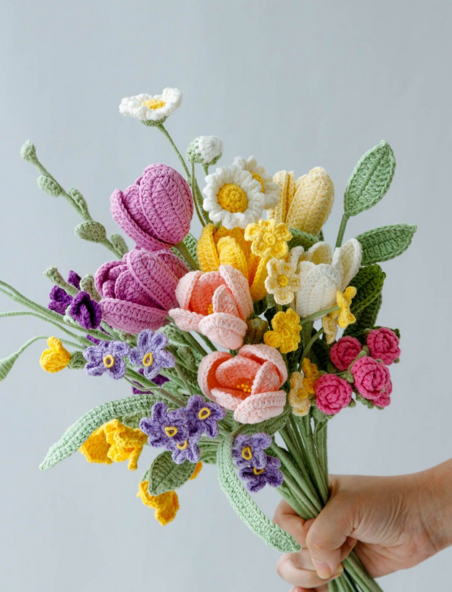
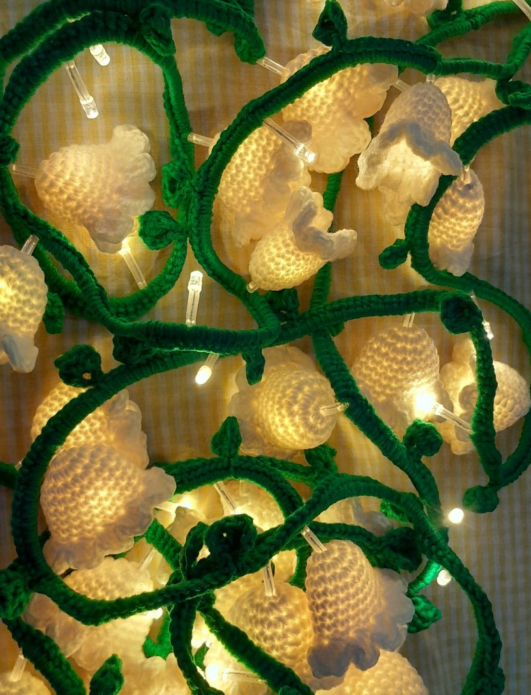
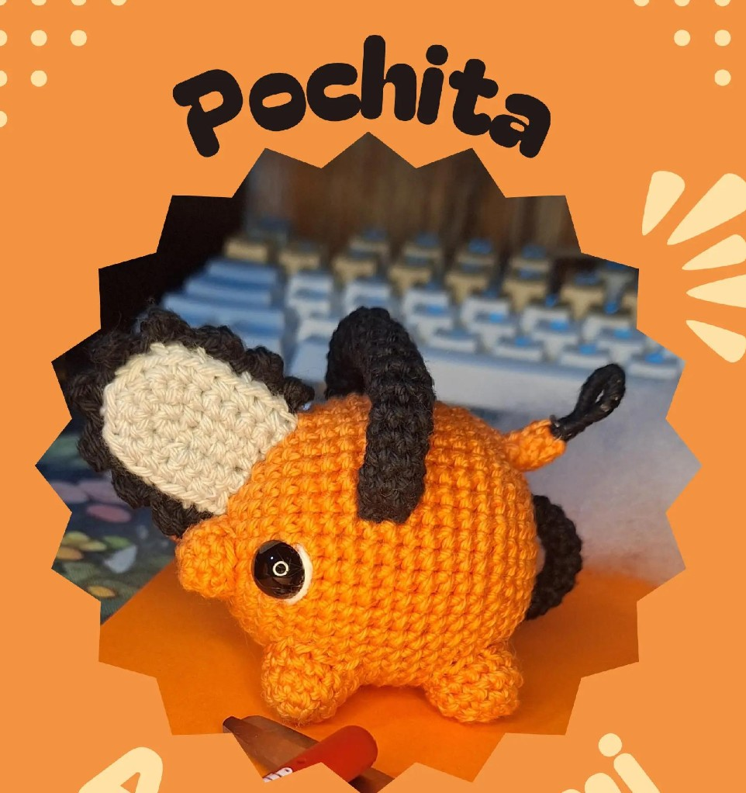
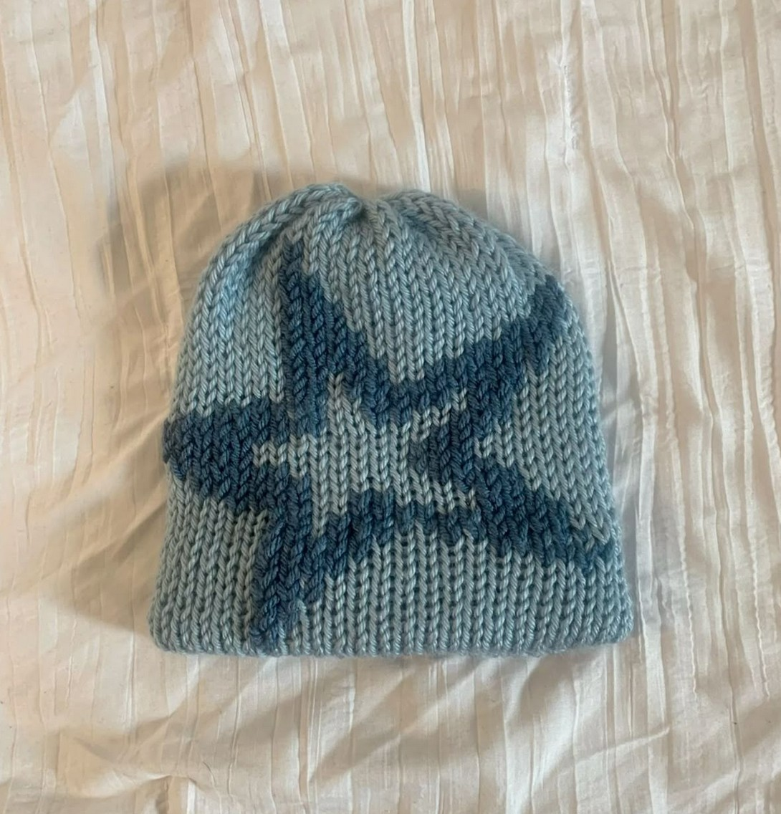
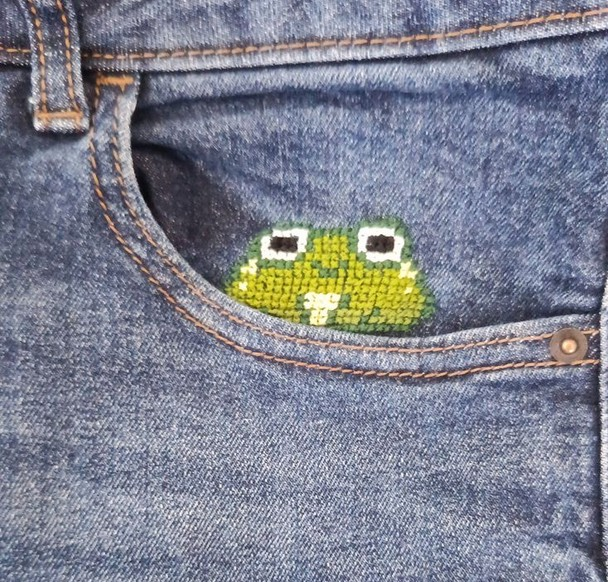

🧣 Tricot
Des mailles, de la patience et de belles couleurs.


Fait main
Trois façons de créer avec mes mains : le crochet, le tricot et la couture, que j'apprends en ce moment.
Chaque pièce est faite à la main.





Des mailles, de la patience et de belles couleurs.
Mes premiers essais : je découvre la machine, les patrons et les finitions.


Envie d'en savoir plus sur moi ?